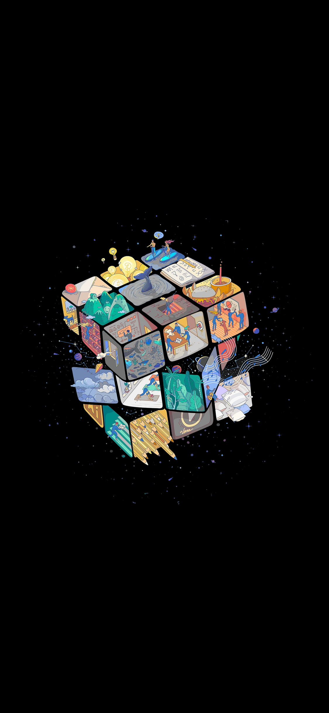

My name is yawar abbas. welcome to my web page
SCOPE OF UML
This specification defines the Unified Modeling Language (UML), revision 2. The objective of UML is to provide
system architects, software engineers, and software developers with tools for analysis, design, and implementation of
software-based systems as well as for modeling business and similar processes.
The initial versions of UML (UML 1) originated with three leading object-oriented methods (Booch, OMT, and OOSE),
and incorporated a number of best practices from modeling language design, object-oriented programming, and
architectural description languages. Relative to UML 1, this revision of UML has been enhanced with significantly
more precise definitions of its abstract syntax rules and semantics, a more modular language structure, and a greatly
improved capability for modeling large-scale systems.

- cat
- dog
- horse
Click Here to visit google